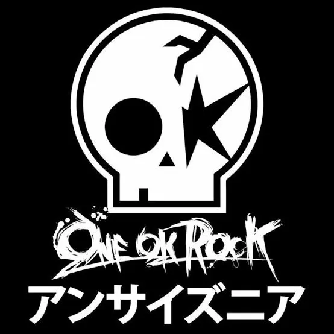

One ok rock es una banda de rock japonesa formada en el año 2005 por cuatro miembros, Takahiro Moriuchi, Toru Yamashita, Ryota Kohama y Tomoya Kanki. Originalmente la banda estuvo compuesta por cinco miembros hasta que el guitarrista Alexander Onizawa abandonó el grupo en 2009. Actualmente la banda tiene publicados 18 albumes, algunos de ellos son Luxury Disease, Eye of storm o 35xxxv, etc..
canciones que me gustan de la banda